Candeeiro de pé
Modelação tridimensional do candeeiro de pé em CAD, incluindo análise estrutural, modelação individual das peças e montagem final.
Porquê este objeto?
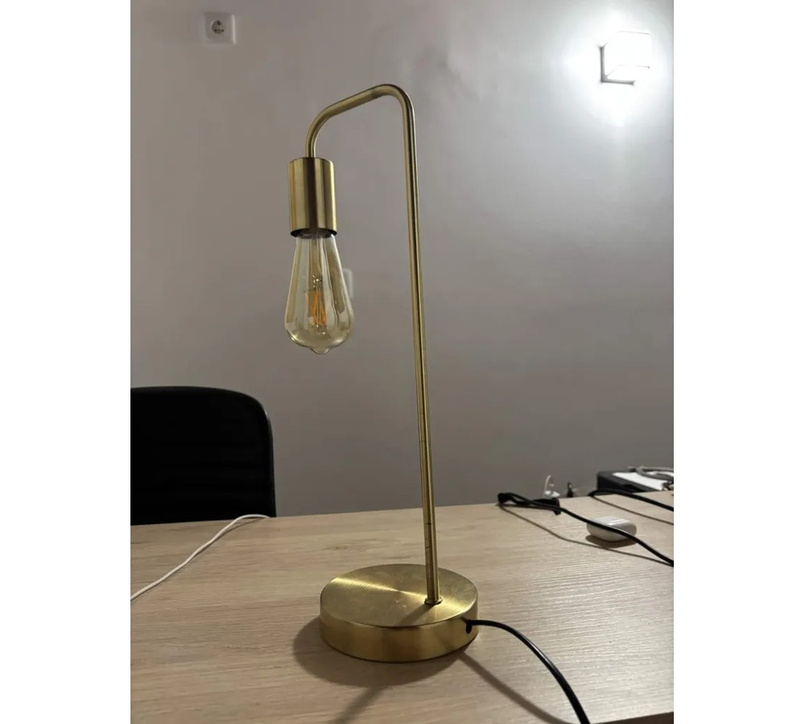

Escolhemos este objeto por apresentar um nível de complexidade adequado às nossas competências atuais em CAD. Como já tínhamos tido algum contacto com o software, mas apenas ao nível dos conceitos básicos, optámos por um objeto mais simples, que nos permitisse consolidar os conhecimentos adquiridos e melhorar a nossa capacidade de modelação tridimensional.
Apesar da sua simplicidade, o candeeiro apresenta diferentes geometrias e componentes, como a base circular, a haste curva e o suporte da lâmpada, permitindo explorar diferentes ferramentas de modelação. Desta forma, conseguimos desenvolver um projeto acessível, mas que ainda nos desafia a aplicar os conhecimentos de CAD e a representar corretamente um objeto real.
Processo
- Passo 1: Escolha do Objeto - Seleção do candeeiro de pé com base na complexidade e variedade de formas geométricas.
- Passo 2: Análise Estrutural - Estudo das componentes, proporções e planeamento do processo de modelação.
- Passo 3: Modelação Individual - Modelação CAD tridimensional de cada componente do candeeiro de forma individual.
- Passo 4: Montagem (Assembly) - Junção e alinhamento de todas as peças modeladas num único objeto final (Assembly).
Estratégia de modelação
Modelação de sólidos e superfícies usando principalmente Extrude Boss, Extrude Cut, Hole Wizard, Swept Boss e Fillet. O principal desafio foi o encaixe preciso entre peças, superado com restrições geométricas e rigor dimensional.
Estratégia de modelação
Modelação de sólidos e superfícies usando principalmente Extrude Boss, Extrude Cut, Hole Wizard, Swept Boss e Fillet. O principal desafio foi o encaixe preciso entre peças, superado com restrições geométricas e rigor dimensional.
Resultados
Componentes modelados individualmente, antes da montagem.
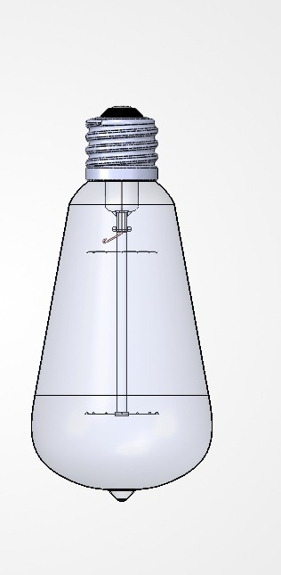
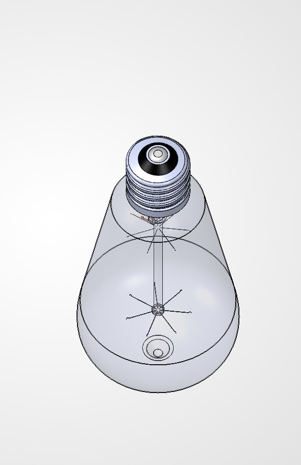
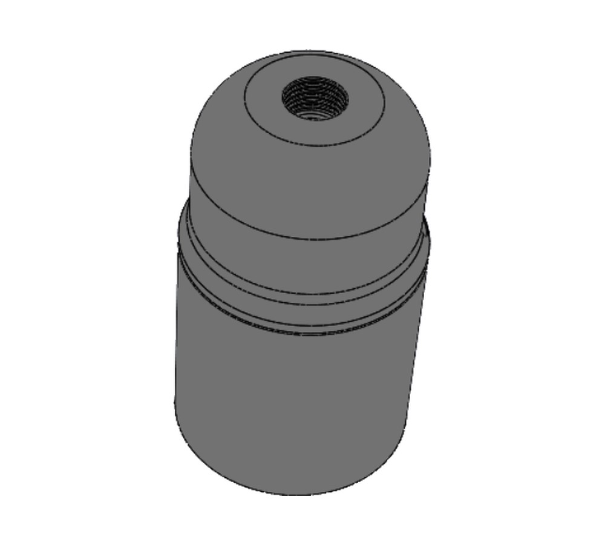
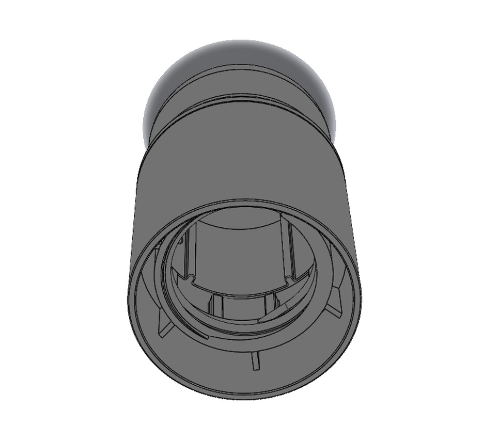
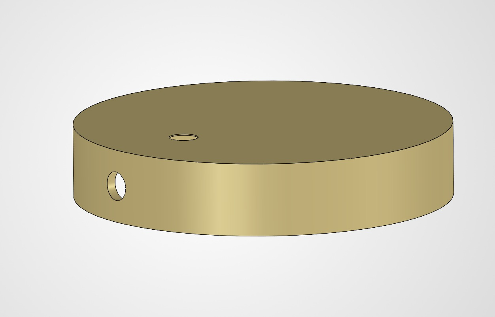
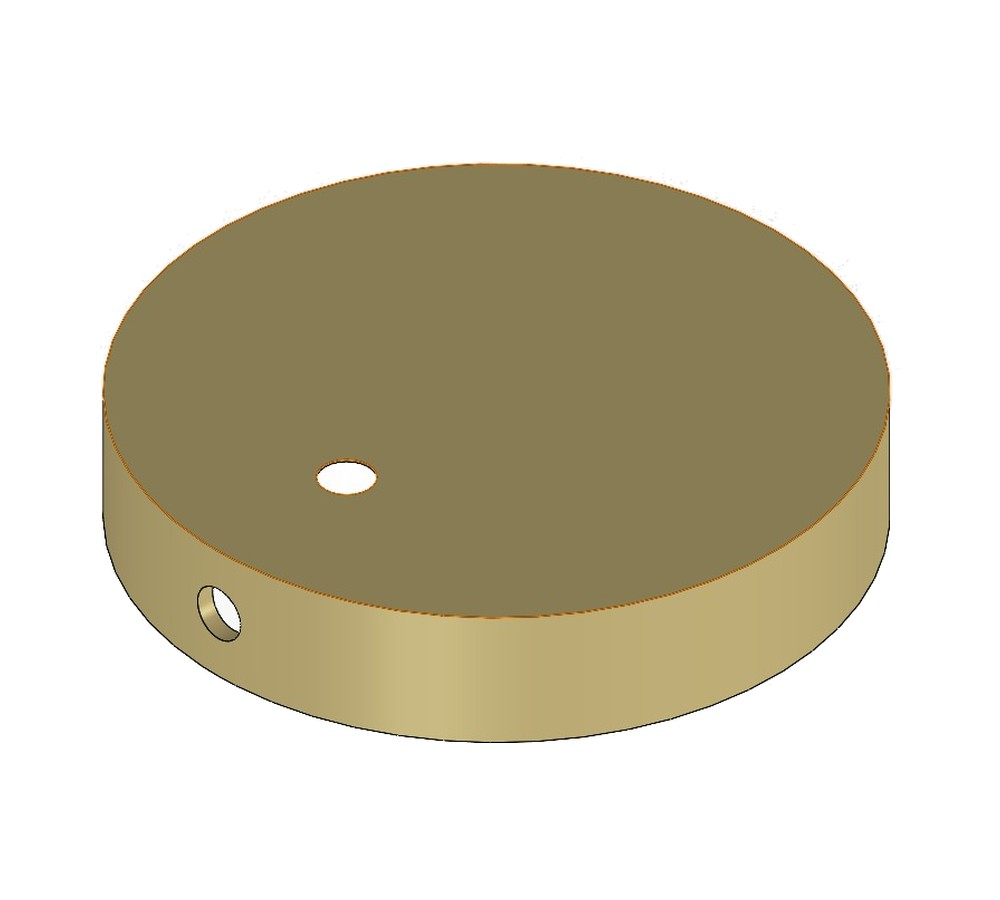
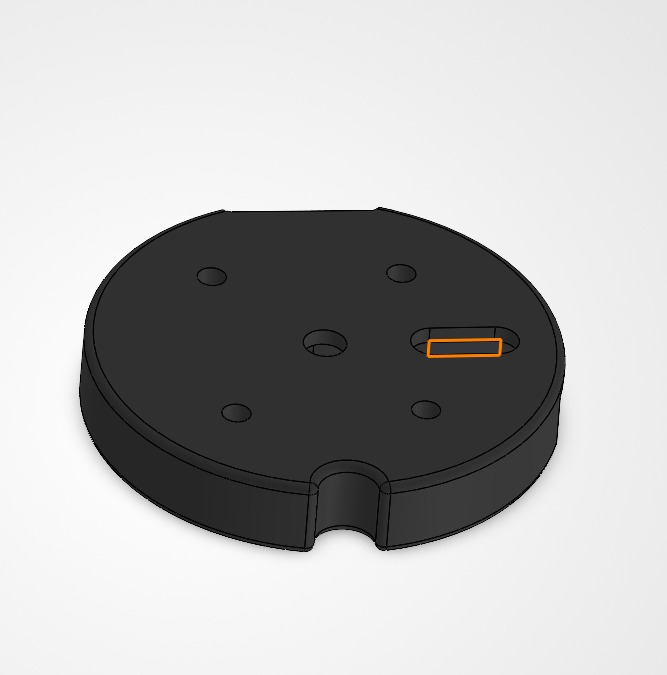
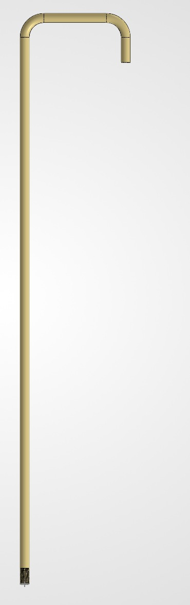
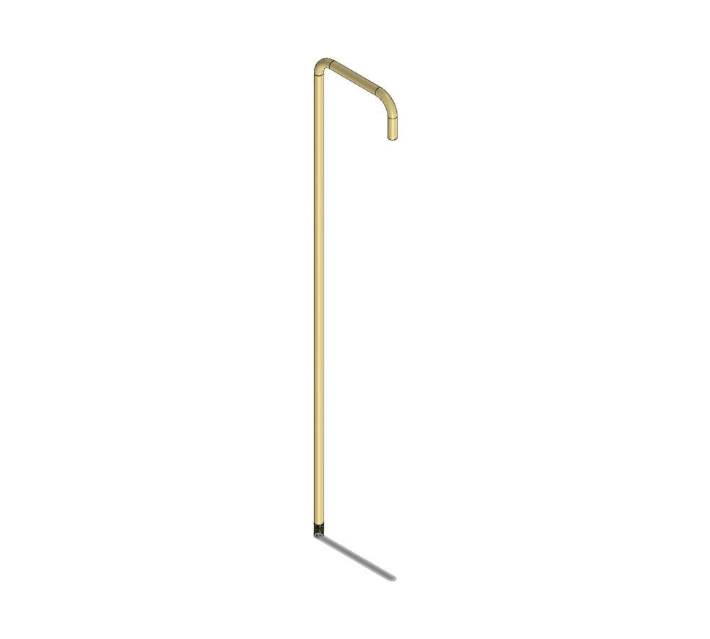
Renders
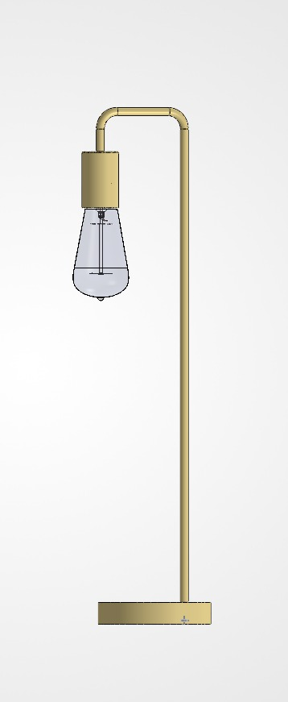
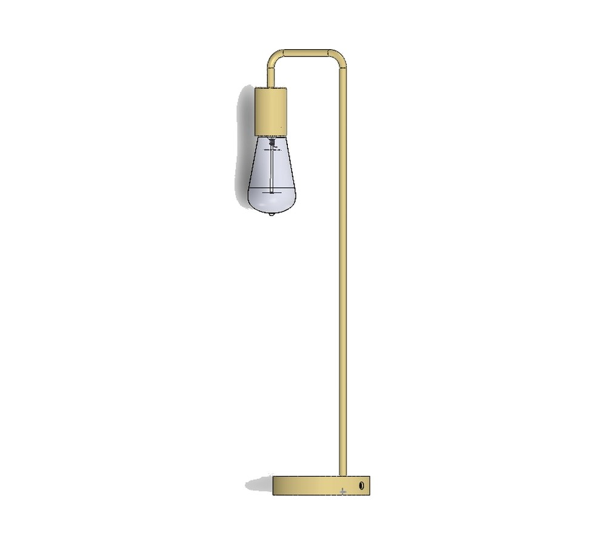
Principais desafios
O maior desafio do projeto foi a reaprendizagem e reativação das competências em software CAD. Destacaram-se, em particular, a criação de roscas e o processo de montagem (Assembly).
Conclusões
A realização deste trabalho permitiu ao grupo recuperar o ritmo de trabalho em CAD. Para otimizar o processo e ultrapassar dificuldades técnicas, recorremos ao estudo de tutoriais, o que facilitou significativamente a modelação e a montagem das peças.